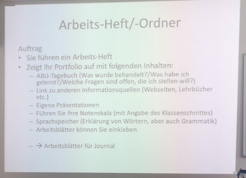
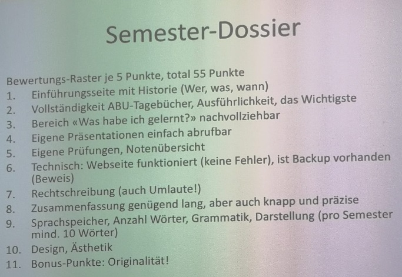

Willkommen
Semester Dossier ABU 2019-2020
Klassen Lehrer: Herr Danuser
Auftrag und Bewertung
 Informationen Über mich
Name: Nicola Bühler
Geburtstag: 27.08.1997
Hobbys: Programmieren, Gamen, Wandern
Stärken: freundlich, geduldig, gutes Vorstellungsvermögen
Was ich so gemacht habe...
Ich habe mich schon von klein auf mit PCs auseinander gesetzt, weil wir zuhause einen PC hatten mit Windows xp und dann Windows 2000 darauf. Ich habe dann wie jedes Kind in der Schweiz die Primarschule und dann die Oberstufe besucht und abgeschlossen. Das waren nicht die einfachsten Jahre meines Lebens. Mit dem Alter wurde es einfacher. Ich fand neue Freunde und dabei das 10. Schuljahr abgeschlossen. Danach absolvierte ich eine Lehre als Pfleger und nach 2 Jahren die Qualifikation bestanden. Nebenbei habe ich mich viel mit den sprachlichen Kommunkationsprogrammen beschäftigt, zuerst mit Skype, anschliessend mit Teamspeak 3 und schlussendlich auf Discord gewechselt. Jetzt nutzte ich nur noch Discord aktiv. Ich habe mich mit vielen verschiedenen Sachen im Internet auseinander gesetzt wie Darknet, Servern mit meinem eigenen Computer. Das Internet mit seinen guten und schlechten Seiten. Meine erste Projektarbeit war eine Webseite zu erstellen. Ich setzte mir Ziele. Am Anfang war es ungewiss, ob ich sie erreichen werde.
Auf Bau der Webseite
Oben Links Befindet sich im Semester Dossier die Navigation der Einzelnen Tage. Wenn man auf die Namen der Tage fährt bekommt man nähre Informationen was wir an dem Tag gemacht haben.
Oben Rechts Befindet sich die Navigation zu denn Einzelnen Seiten.
Wenn Probleme Auftreten die Seite ist für Google Chrome geschrieben ich habe sie noch nicht auf Anderen Geräten getestet.
Bei Fragen Stehe ich ihnen gerne zu verfügung.
Wortspeicher
Fachwort |
Erklärung |
| Kompetenzen | Fähigkeiten |
| Selbstreflektion | |
| VA | Vertiefungarbeit |
| Audiovisuelle Medien | |
| Internationale Gemeinschaft | |
| Internationale Organisation | |
| UNO | United Nations Organisations |
| Globalisierung | |
| Resulotion | |
| Sicherheitsrat | |
| WWF | |
| NATO | |
| IKRK | |
| Amnesty International | |
| Entwicklungsland | |
| Greenpeace | |
| WTO | |
| OECD | |
| Masseneinwanderung | |
| Personenfreizügigkeit | |
| Binnenmarkt | |
| Erasmus | |
| Nachhaltiges Leben | |
| Quellenangaben |
| Deutsch | Geselschaft | Klassen Schnitt |
| 5.0 | 4.7 | Unbekannt |
| 5.4 | 4.7 | Unbekannt |
| 6.0 | 6.0 | Unbekannt |
Quellenangaben
Klassenchat auf Wahtsapp / Bilder Joel Brendle Bilder die er für mich gemacht hat. Zentral Bibliothek Zürich